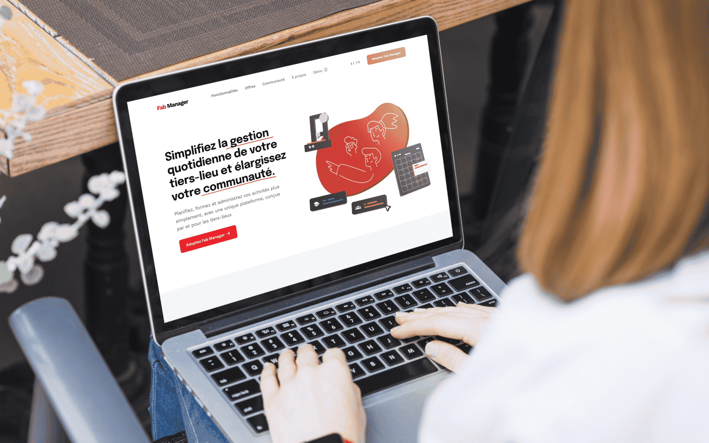
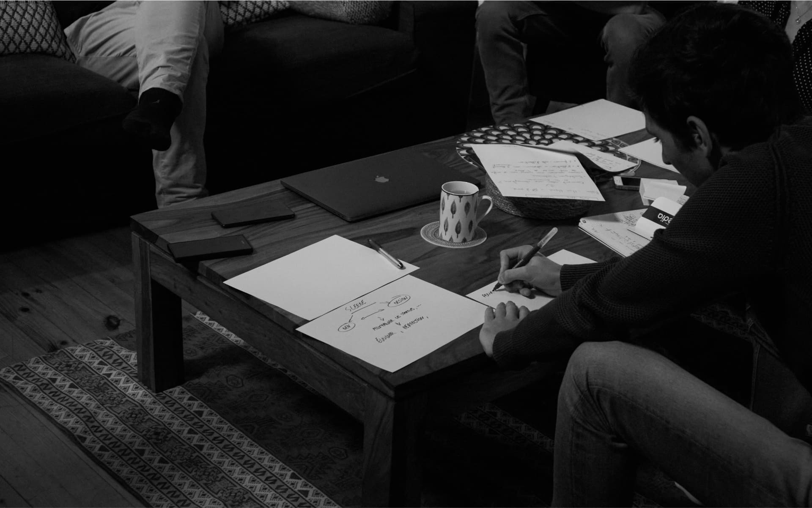
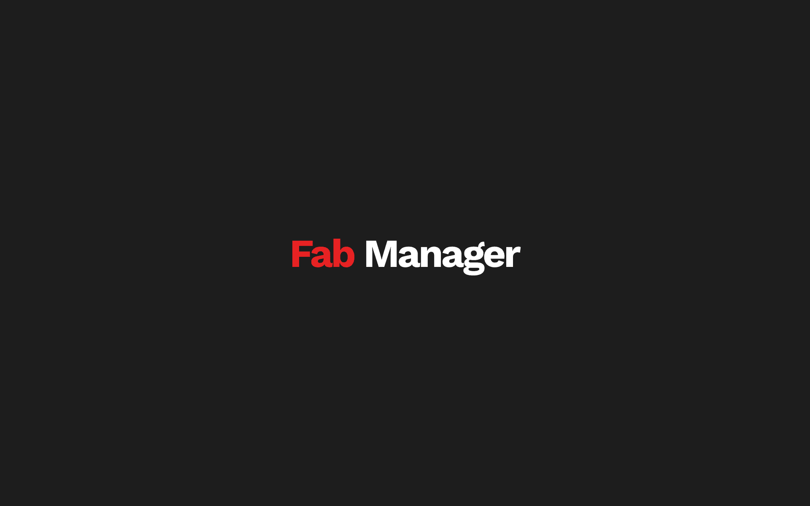

4. Fab Manager
Identité graphique et UX nouvelle de la page d’accueil du site web
2021 / 2022
Fab Manager ↗ est une application web dirigée par l’agence Sleede ↗ — dans laquelle j’ai fait mon apprentissage — permettant de faciliter la gestion des tiers-lieux, et plus particulièrement les fab labs. Dans le cadre d’un projet professionnel, j’ai proposé une refonte du site vitrine de Fab Manager.
En établissant un audit détaillé de l’existant, sur les différents éléments qui le composent (grille de mise en page, typographie, boutons, images et couleurs), j’ai travaillé sur le renouvellement de ces éléments. Le choix des typographies Epilogue (pour les titres) et Work Sans (pour le texte) en addition aux illustrations donnent une assurance et une image sérieuse au logiciel. J’ai pu retravailler la charte graphique de Fab Manager pour à partir de la documentation W3C ↗ de l’accessibilité numérique. De plus, la grille de mise en page est linéaire, chacune des séquences proposées à l’usager est déterminée par une hiérarchisation de l’information claire et structurée.
En établissant un audit détaillé de l’existant, sur les différents éléments qui le composent (grille de mise en page, typographie, boutons, images et couleurs), j’ai travaillé sur le renouvellement de ces éléments. Le choix des typographies Epilogue (pour les titres) et Work Sans (pour le texte) en addition aux illustrations donnent une assurance et une image sérieuse au logiciel. J’ai pu retravailler la charte graphique de Fab Manager pour à partir de la documentation W3C ↗ de l’accessibilité numérique. De plus, la grille de mise en page est linéaire, chacune des séquences proposées à l’usager est déterminée par une hiérarchisation de l’information claire et structurée.
⤷ Audit, Communication avec les métiers du web (chef de projet, développeurs, marketing), Notion, Illustrator, Figma
⤷ 4 semaines d’étude et 4 semaines de conception
⤷ 2021 / 2022
⤷Prototype interactif ↗
⤷Audit ↗
⤷ 4 semaines d’étude et 4 semaines de conception
⤷ 2021 / 2022
⤷Prototype interactif ↗
⤷Audit ↗

